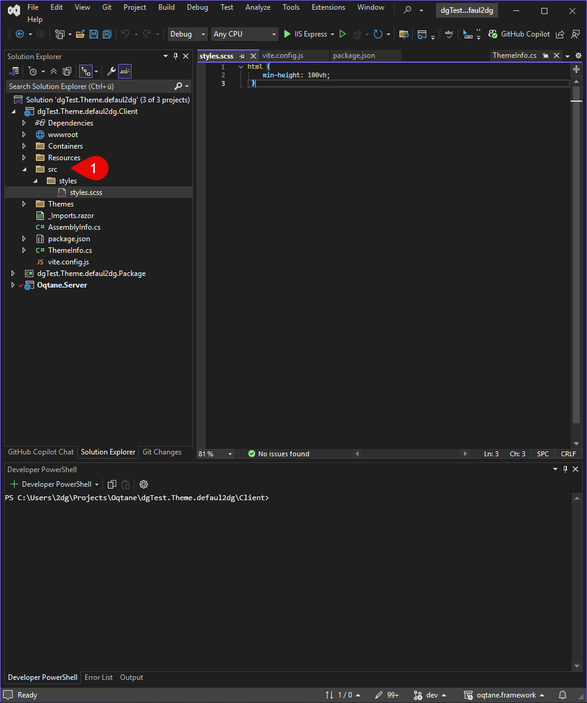
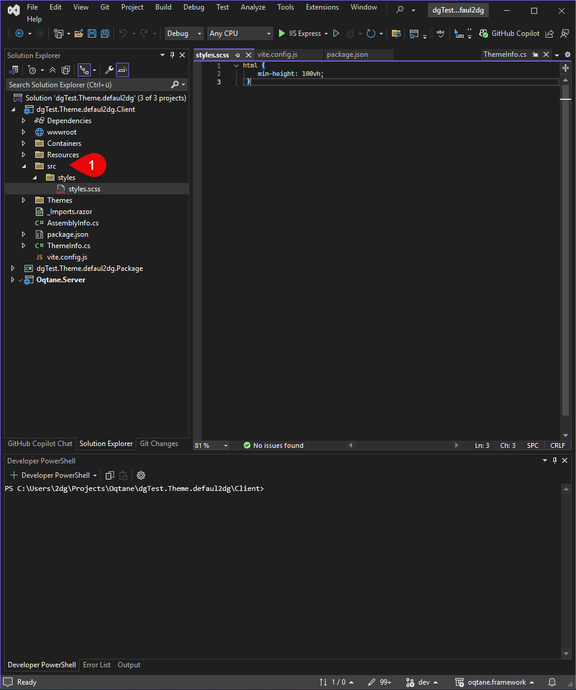

What is Vite?
Vite is a modern build tool and development server, designed for fast and efficient workflows in web projects using JavaScript, TypeScript, Vue, React, or even plain SCSS/CSS.
Compared to older tools like Webpack, Vite offers significantly faster startup and compilation times thanks to its use of native ES modules and efficient hot module replacement (HMR).
In Oqtane themes, we use Vite to:
- Compile SASS/SCSS files into CSS
- Bundle and optimize JavaScript or TypeScript code
When properly configured, vite will automatically build your source assets into optimized files whenever you build your Oqtane theme. This is how it works:
graph LR;
A["📄 Many Source Files <br> (TypeScript, SASS, ...)"] --> B["⚙️ Vite"]
B --> C["🎁 Optimized Files <br> (.min.css, .min.js)"]
C --> D["🩸 Oqtane Theme"]
What do you need for Vite?
To get started with Vite, follow these basic steps:
- Install the required Node modules
Begin by installing all necessary dependencies for your project. - Add the Vite configuration
Once the modules are installed, copy or create your Vite config file and run the build process.
You should now see outputs likestyle.min.cssbeing generated. - Verify automatic builds
Confirm that Vite correctly generates new files or updates them after every build or when you change your source code.
1. Setup Node Modules
1.1 Create package.json
In the root directory of your theme project, create (or update) a package.json file with the required dependencies. For example:
{
"name": "ToSic.Cre8magic-Theme-Basic",
"version": "01.00.00",
"scripts": {
"dev": "vite build --mode dev",
"build": "vite build",
"watch": "vite build --watch"
},
"author": "2sic internet solutions",
"license": "MIT",
"dependencies": {
"bootstrap": "^5.3.3"
},
"devDependencies": {
"autoprefixer": "^10.4.7",
"rollup-plugin-copy": "^3.5.0",
"sass": "^1.58.0",
"typescript": "^5.0.0",
"vite": "^6.1.0",
"vite-plugin-static-copy": "^2.3.0"
}
}

Tip
Don't forget to adjust the name and author in the JSON.
Make sure you have the latest devDependencies or use a newer version if necessary.
1.2 Install Node Modules
Tip
Make sure you run this in the correct folder, where your package.json file is located.
Open a terminal in Visual Studio or your preferred code editor, and run the following command:
npm install
This command will read the package.json file and install all the required dependencies into a node_modules folder in your project directory.
You should now see node_modules and package-lock.json.
Check that these files and folders appear in your project. This confirms the dependencies were installed correctly.


2. Create the Vite Configuration
The configuration file vite.config.ts (or vite.config.js) defines how Vite processes your SCSS and JS files.
2.1 Add Vite Configuration
Here is a simple example Vite configuration:
Simple Vite config on GitHub
Copy this into your project.
Tip
Change the packageName to match your project name.
Update rollupOptions > input > theme to reflect your folder structure.

2.2 Add a Test Source File
If you don’t already have source files, Vite will throw an error like the one shown below.
Create a src folder in the project root, then inside it a styles folder.
Add a file named styles.scss to that folder.
 

2.3 Run Vite in the Terminal
Once all the steps above are complete, you're ready to run Vite.
You’ll see the output in your project directory after the command finishes.
Open the terminal and navigate to the Client folder:
cd .\Client\
Then run:
npm run dev
Now, you will see the output in wwwroot/themes/YOUR_THEME_NAME as styles.min.css.


2.4 You Are Now Ready to Code – Use the Watcher
To improve your development workflow, you can start the Vite watcher, which automatically compiles your SCSS files into CSS whenever changes are made.
A Vite watcher (or simply "watch mode") continuously monitors your source files (e.g., SCSS, JS, or TS).
Whenever you edit and save a file, the watcher automatically triggers a rebuild — no manual commands required.
Benefits of using the watcher:
- Saves time – no need to rebuild manually after each change.
- Instant feedback – ideal for development, allowing you to see changes immediately.
You're now fully set up and ready to build and style your theme more efficiently!
3. Use the New Compiled CSS Code
If you want to see the css file, check the ThemeInfo.cs
Show Compile SASS Code
4. Set up Vite to run on every build
After the setup is complete, you can build your theme by running a normal build.
To do this, you need to modify the .csproj file:
This will compile your SCSS files into optimized CSS (e.g., styles.min.css) and place them in the appropriate directory.
The same process applies to your JS/TS files.
<!-- This target ensures that `node_modules` exists before building.
If it doesn't exist, it checks for `package-lock.json` and runs `npm ci` (clean install),
otherwise it falls back to `npm install`. -->
<Target Name="RunNpmInstallOrCi" BeforeTargets="Build" Condition="!Exists('node_modules')">
<Exec Command="if exist package-lock.json (npm ci) else (npm install)" />
</Target>
<!--This target builds the frontend (e.g. compiles JS and SCSS via Vite) using `npm run build`.
It only runs during the Release configuration.
It depends on `RunNpmInstallOrCi` to ensure all dependencies are installed first.-->
<Target Name="BuildFrontend" BeforeTargets="Build"
DependsOnTargets="RunNpmInstallOrCi"
Condition="'$(Configuration)' == 'Release'">
<Exec Command="npm run build" />
</Target>
<!-- This target runs the frontend development server (e.g. Vite's dev mode) using `npm run dev`.
It only runs during the Debug configuration.
It also depends on `RunNpmInstallOrCi` to ensure dependencies are available -->
<Target Name="BuildFrontendDebug" BeforeTargets="Build"
DependsOnTargets="RunNpmInstallOrCi"
Condition="'$(Configuration)' == 'Debug'">
<Exec Command="npm run dev" />
</Target>